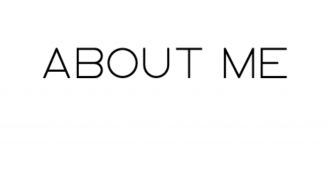
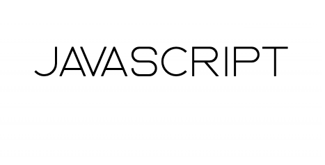
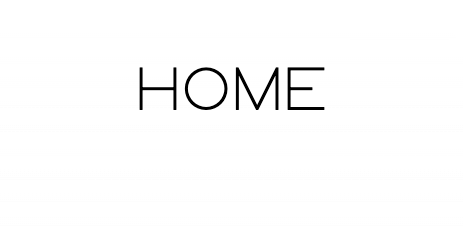
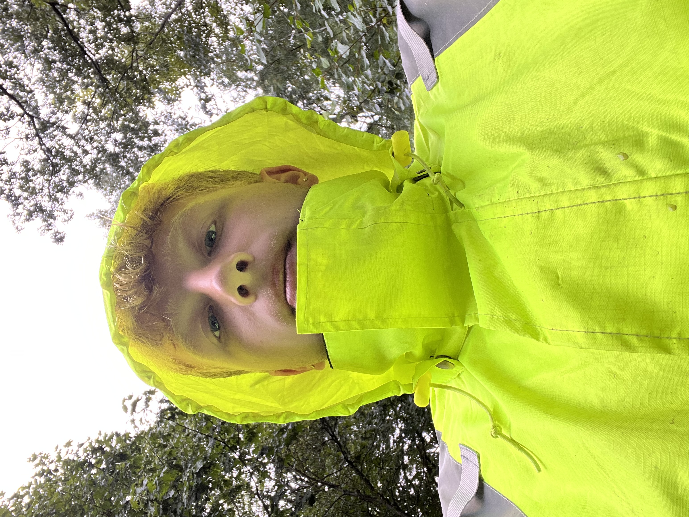
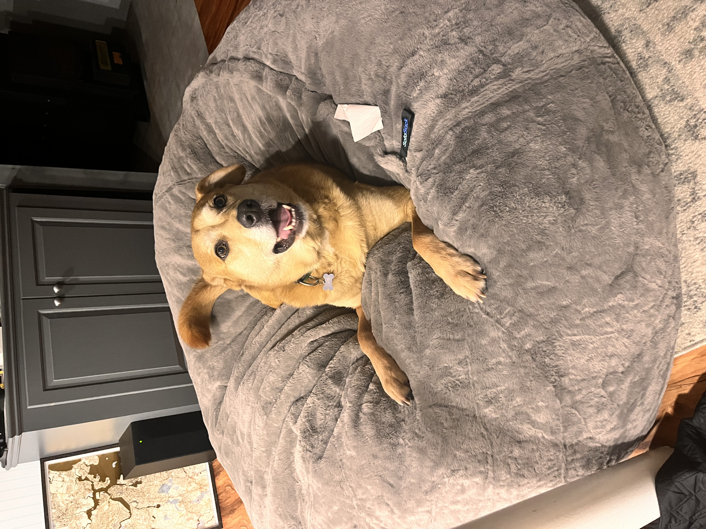
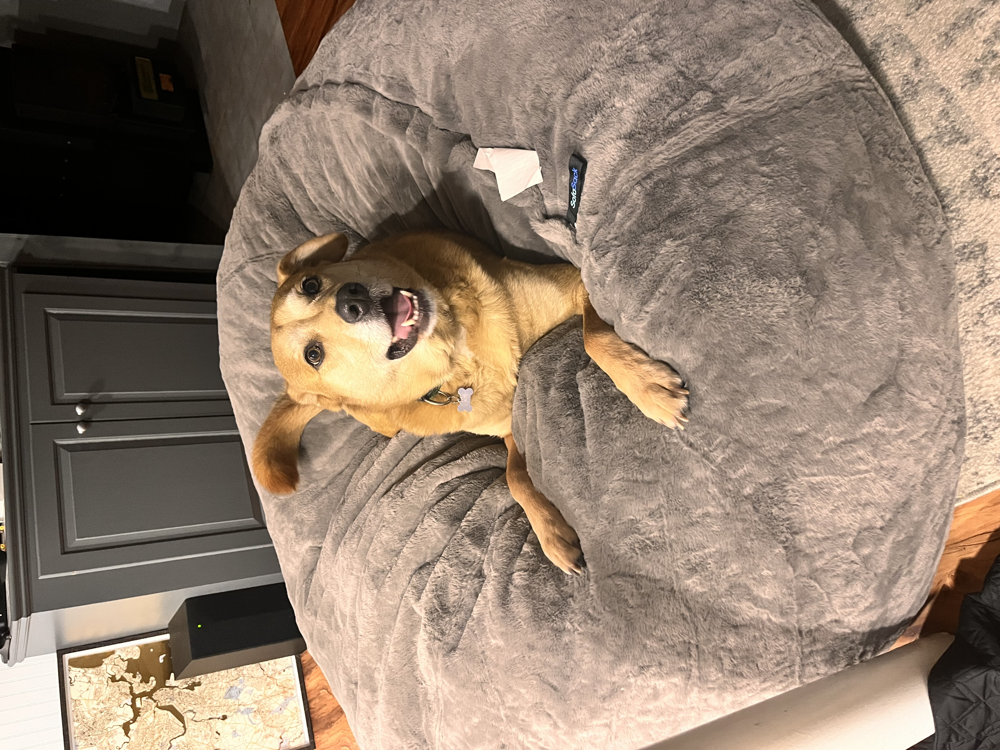

|  |  |  |
Hello, my name is Patrick Smith. I am currently a sophmore at the University of Rhode Island majoring in Criminology and Criminal Justice. This is my first computer science course, however im very interested in looking into a double major in computer science or a minor in cyber security. In the summer, I work as a trashman for my town which is pictured below. Its very vile work but it pays well. Additionally, I attended a USA vs Germany soccer game last semester and as soccer is one of my passions, I figured I would add it here. Finally, a picture of my dog Chester because why not.
 
